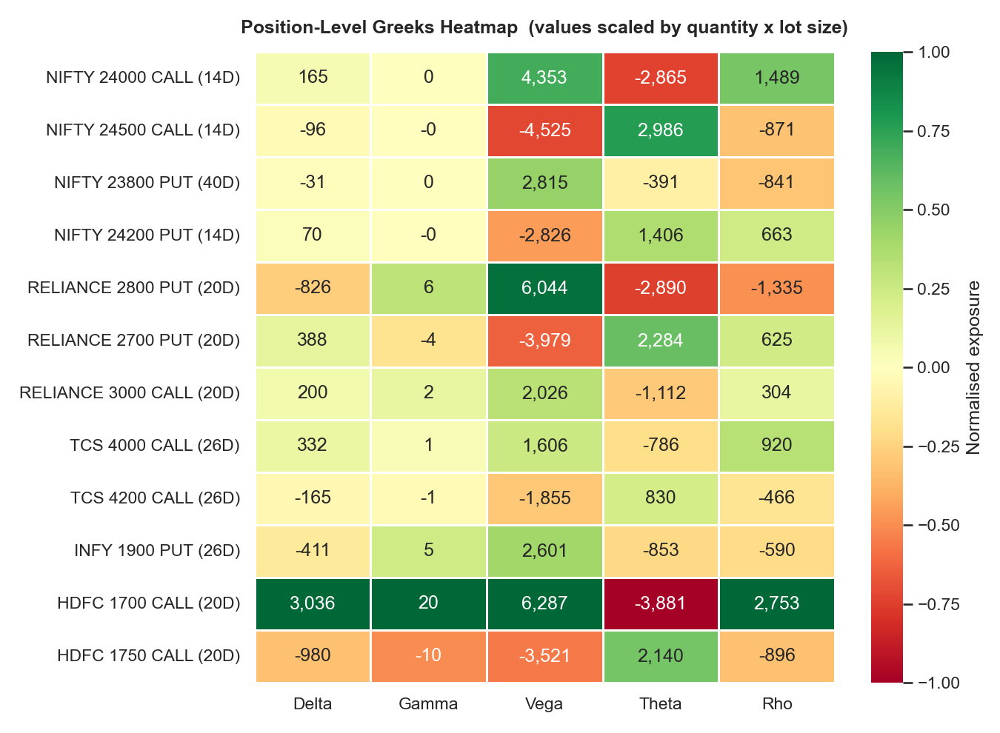
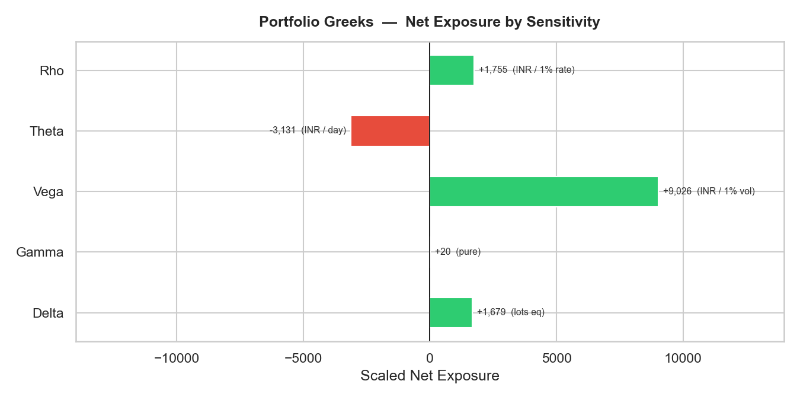
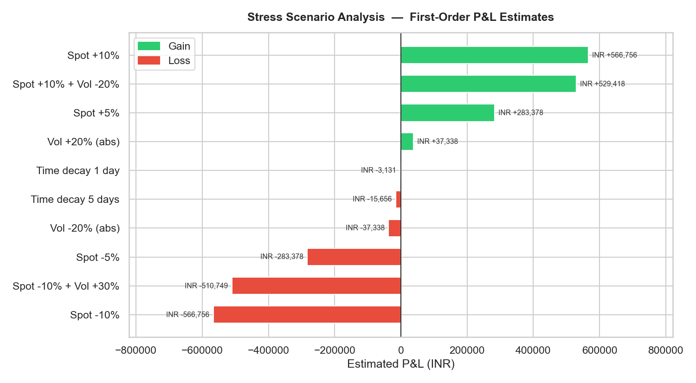
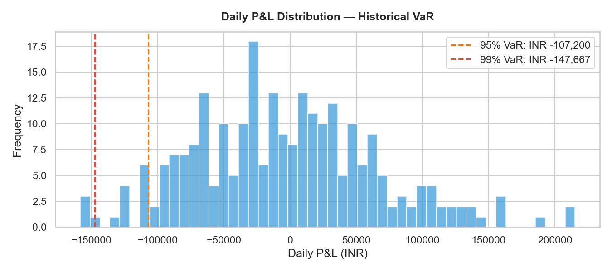

A derivatives risk monitor for a 12-position NSE options book — built to answer a question I kept running into at work: which position is actually carrying the most risk?
At Morgan Stanley I monitor options portfolios every day. One of the things that becomes clear quickly is that the size of a position — the notional, the number of contracts — tells you almost nothing about how much risk it's actually carrying. A small notional position can dominate your entire directional exposure. A large position can be nearly flat on your book because it's close to neutral Delta.
I built this project to make that visible. I assembled a 12-position NSE options book across NIFTY, Reliance, TCS, Infosys, and HDFC — a realistic mix of calls and puts at different strikes and expiries — and ran the full risk analytics on it. The question I wanted answered: if you only looked at position sizes, what would you miss?
The heatmap below shows each position's Greeks scaled to actual portfolio exposure. The colour tells you where risk is concentrated — and it's not where the largest positions are.


The HDFC 1700 Call held 45% of total portfolio Delta. If the market moved 1%, nearly half the resulting P&L move came from one name. That's a meaningful concentration — and it would be completely invisible if you were looking at position sizes or notionals.
This is one of those things that sounds obvious once you hear it but takes some time working with live books to really internalise. Derivatives positions interact with each other in ways that raw notional can't capture.
The portfolio's net Theta is −3,131 per calendar day. That means the book loses that much in value just from the clock ticking — no market move required, no news event, nothing. Options are decaying assets, and Theta is what that decay looks like in rupees per day.
Most discussions of options risk focus on what happens when the spot price moves. Theta is the silent background cost that's running whether the market moves or not. Over a 30-day expiry cycle, this adds up to nearly INR 94,000 of time-value bleed — before you factor in any market moves. Understanding where this cost sits across the portfolio matters a lot when you're deciding which positions to hold through expiry.
The stress test below simulates 10 named scenarios — spot moves of ±5% and ±10%, volatility spikes, time decay, and combinations. NIFTY has seen −10% moves several times in the past five years. This is what the portfolio would have looked like going into one of those days.


The stress test reveals something interesting: the worst-case scenario (−10% spot, +30% vol) is less bad than a naive reading of the Delta would suggest. The reason: this portfolio has positive Vega, meaning it benefits when implied volatility rises. A market crash typically comes with a spike in implied vol — and the Vega gain partially cushions the Delta loss. These two exposures are partially offsetting. Knowing that before the crash is the point.
Historical VaR (−107,200) and parametric VaR (−121,469) give different answers for the same portfolio. The difference — about INR 14,000 — comes from an assumption: parametric VaR assumes daily returns follow a normal distribution. They don't. Real market returns have fat tails — extreme days happen more often than the normal distribution predicts.
The historical method doesn't make that assumption. It uses the actual distribution of simulated P&L. The parametric answer is faster to compute but consistently underestimates tail risk. This difference matters most precisely when you need VaR to be accurate — in volatile markets.
The most valuable part wasn't the code — it was constructing a multi-leg book and watching the Greeks interact. When you add a short put to a long call position, the Delta exposure shifts in ways that aren't always intuitive. The Gamma profile changes near expiry. The Vega exposure can flip sign depending on how you've structured strikes.
Working with these numbers in a system I built from first principles gave me a much more concrete mental model of how derivatives books behave. The Greek framework is the language that makes complex multi-position risk legible — and building the engine that produces those numbers made that language more concrete for me.